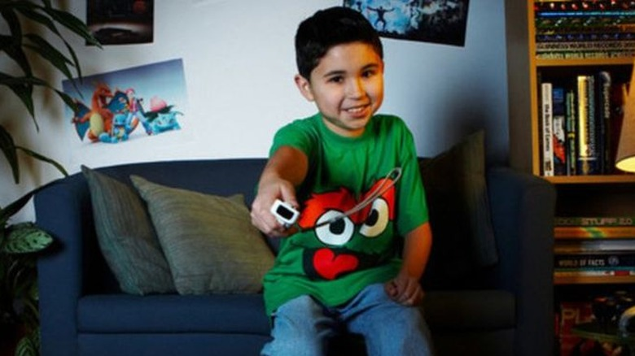

Did you know?
Did you know?
The youngest professional gamer was 7 years old when he signed a professional deal
History
Esports started in 1972, back when home consoles first became common. One of the first big nationwide competitions was Space Invaders with an audience of 10,000. This led to another tournament but the game chosen this time was Donkey Kong. Soon, other games rose to popularity in the early 1990's such as fighting games and first-person shooters. ESports gained momentum in the 2000's with big tournaments such as Halo 2 and Starcraft 2. Fast forward to the 2010's, League of Legends was a popular game to the point whereby its' first world Championship sold out minutes after going on sale.

More Information
High Stakes Competitions
In 2020, there was a gaming championship that had 3.8 million viewers watching players play for a multimillion dollar prize. Of course, this was the League of Legends World Championship. Made by Riot Games, this game has turned into one of the biggest games out there. Its audience and view counts surpass those of even Super Bowl or NBA finals. Stakes are also as high with the winner getting a grand sum of $2,225,000 USD. This massive amount of money is shocking compared to the Super Bowl's $150,000 USD for each player on the winning team.
Variety
Everyone knows about the popular games and their competitions. DOTA 2, League of Legends and Counter-Strike:Global Offensive 2 of those famous 3 are counted as Multiplayer Online Battle Arenas(MOBA) while the last is a First-person Shooter(FPS). However, there are many other genres of games in the Esports industry. For example, there are a few tournaments hosted for Battle Royale games such as PUBG and Fortnite. Not all Esports games are related to action, however, there are also card games that make it to the big leagues such as Hearthstone. Others require thinking and strategy such as Warcraft:III and Starcraft 2.